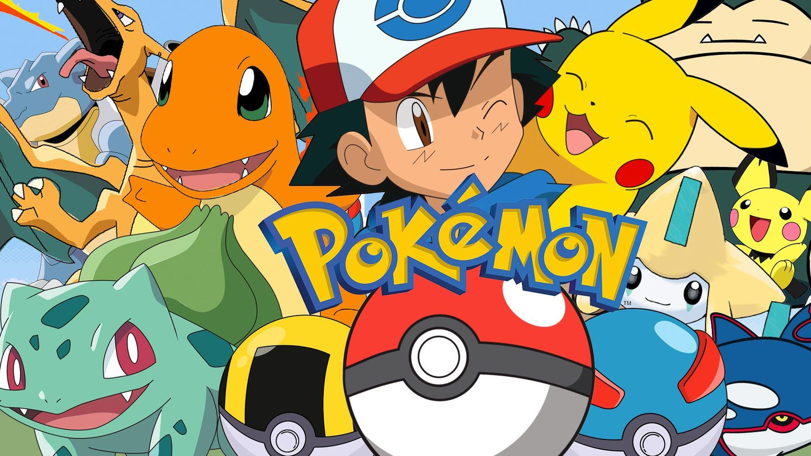
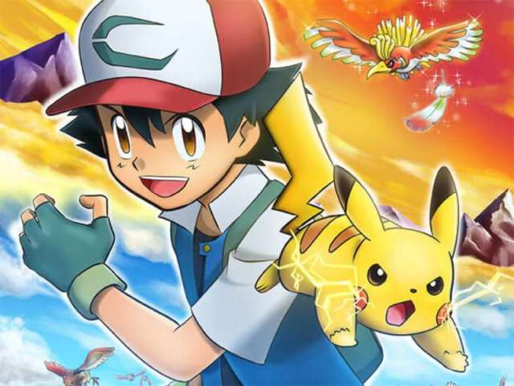

POKEMON : 25 anos de uma das maiores franquias de sucesso
Pokémon tomou proporções tão grandes em seus 25 anos de história, que é quase irônico pensar que tudo começou com Satoshi Tajiri, criador da série, colecionando insetos em sua infância. A paixão por criaturas únicas permaneceu com o japonês até a vida adulta, e deu vida a uma das maiores franquias do mundo do entretenimento. Claro, o ponto de partida foi nos jogos de Game Boy, mas Pokémon tem uma trajetória que se expande para as mais diferentes mídias: desenhos, quadrinhos, filmes animados e em live-action, jogos de carta, incontáveis brinquedos colecionáveis e por aí vai. Os monstrinhos de bolso tomaram o mundo de inúmeras maneiras e seguem crescendo.
Origens
Em um primeiro momento, o conceito de Pokémon não foi muito bem entendido pelos executivos da Nintendo. Na verdade, Tajiri tentou vender o projeto algumas vezes para a empresa ao longo de seis anos, mas só obteve resposta positiva quando teve a ajuda de ninguém menos que Shigeru Miyamoto, criador de Mario. Ainda que extremamente simples olhando em retrospecto, os primeiros Pokémon eram um projeto ambicioso para a época. Era essencial que o game utilizasse o Cabo Link do Game Boy, para que os “insetos” pudessem ser transportados de um aparelho para o outro. Tajiri misturou esse conceito com as cápsulas de Ultraseven, que carregavam monstros gigantescos em um espaço muito pequeno, e assim nasceram os Pocket Monsters — que, originalmente, se chamavam Capsule Monsters.
Pokemon no mundo
Claro que a popularidade mundial viria apenas com o lançamento no Ocidente, que aconteceu em setembro de 1998 com as versões Red e Blue. O anime chegou junto, já engrossando bastante o caldo para o novo público.
À época, alguns membros da equipe de localização, que estava transformando os jogos para o Ocidente, pensaram que os bichinhos fofos não seriam apelativos para o público. Ao mesmo tempo, a Nintendo resistiu em mudar os nomes originais dos monstrinhos, que se aproximavam da fonética japonesa. Felizmente, ambas decisões foram revertidas e o design foi mantido, ao passo que os nomes foram alterados para que fizessem mais sentido na língua inglesa. Já pensou se Pikachu não fosse uma criatura tão simpática? Ou se Bulbasaur fosse chamado de Fushigidane? O famoso ratinho elétrico, vale citar, poderia receber uma aparência de tigre com seios, de acordo com vídeo do canal Did You Know Gaming?. Em 1998 também foi lançado o primeiro spin-off da franquia, Pokémon Stadium. Apesar de não trazer todos os 151 monstrinhos da primeira geração e também não ter grandes números de venda, o game certamente ficou no coração dos jogadores de Nintendo 64 e ainda ganhou uma sequência, Pokémon Stadium 2, em 2000.
Seus 25 anos
No fim das contas, cada um dos “braços” de Pokémon se tornou uma marca fortíssima por si só. Os games já estão na oitava geração, com mais de 800 monstrinhos diferentes, e seguem com boa recepção do público. No total, são 31 jogos da série principal, contando remakes como HeartGold e FireRed, além de dezenas de spin-offs com os mais variados gêneros e plataformas. Entre os spin-offs, Pokémon GO — que finalmente trouxe os monstrinhos para o "mundo real" — ainda é muito relevante e jogado por milhões de treinadores ao redor do mundo. O Trading Card Game também possui comunidade bastante estabelecida, com algumas cartas passando dos milhões de reais em valor. Inclusive, os cenários competitivos de Pokémon podem não ser tão badalados quanto os de League of Legends ou de Counter-Strike, mas também fazem bastante barulho. A Pokémon Company promove anualmente o Pokémon World Championships, série de campeonatos que incluem os jogos tradicionais da série, TCG, Pokkén Tournament (jogo de luta ao estilo Tekken) e Pokémon GO. Os torneios acontecem desde 2004 e, infelizmente, tiveram sua sequência interrompida devido à pandemia de COVID-19. As edições 2020 e 2021 foram canceladas, mas o competitivo ainda sobrevive nos jogos Sword e Shield por meio de plataformas digitais. O anime é um fenômeno à parte, e atingiu seu ápice quando Ash finalmente foi campeão da Liga Pokémon no episódio 1082. O desenho segue na ativa depois de 24 anos e já conta com 21 filmes. Além deles, há também o remake em 3D de Mew vs. Mewtwo e o live-action Detetive Pikachu.
